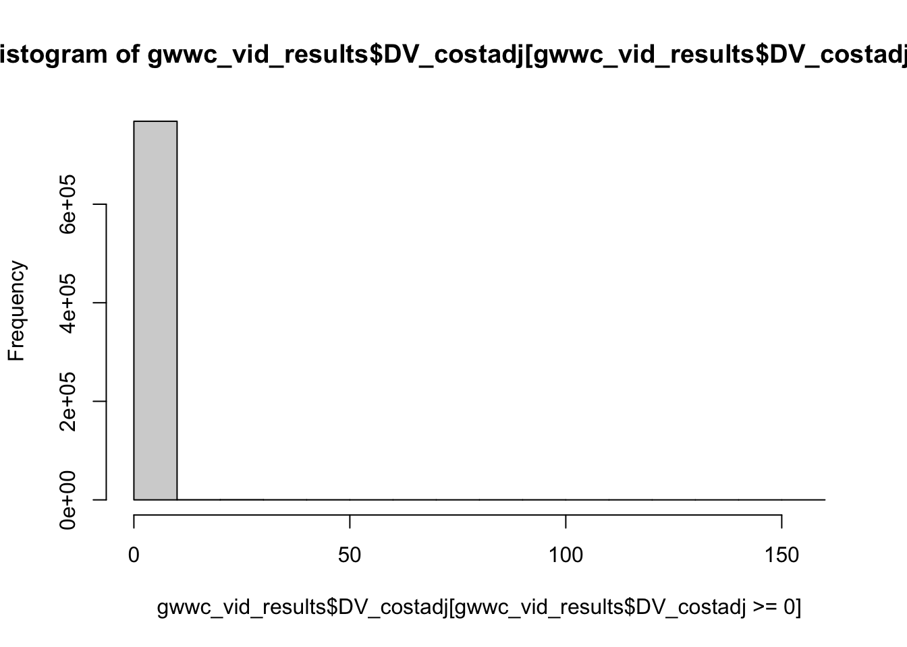

Code
knitr::include_url("https://effective-giving-marketing.gitbook.io/untitled/partner-organizations-and-trials/gwwc/giving-guides-+")“Effective Giving Guide Lead Generation campaign … ran late November 2021 - January 2022. The objective of this campaign was to see whether a factual or cause-led approach was more cost effective at getting people to fill out a form and give us their email in order to download our Effective Giving Guide.”
There were two dimensions of treatment content:
Bigger difference next year: Want to make a bigger difference next year? Start with our Effective Giving Guide and learn how to make a remarkable impact just by carefully choosing the charities you give to.
100x impact: Did you know that the best charities can have a 100x greater impact? Download our free Effective Giving Guide for the best tips on doing the most good this holiday season.
6000 people: Giving What We Can has helped 6,000+ people make a bigger impact on the causes they care about most. Download our free guide and learn how you can do the same. Cause list: Whether we’re moved by animal welfare, the climate crisis, or worldwide humanitarian efforts, our community is united by one thing: making the biggest impact we can. Make a bigger difference in the world through charitable giving. Start by downloading our Effective Giving Guide. You’ll learn how to approach charity research and smart giving. And be sure to share it with others who care about making a greater impact on the causes closest to their hearts.
Learn: Use our free guide to learn how to make a bigger impact on the causes you care about most.
Only 3% research: Only 3% of donors give based on charity effectiveness yet the best charities can be 100x more impactful. That’s incredible! Check out the Effective Giving Guide 2021. It’ll help you find the most impactful charities across a range of causes. Overwhelming: It can be overwhelming with so many problems in the world. Fortunately, we can do a lot to help, if we give effectively. Check out the Effective Giving Guide 2021. It’ll help you find the most impactful charities across a range of causes.
Charity research facts short video (8 seconds): Only 3% of donors research charity effectiveness, yet the best charities can 100x your impact, learn how to give effectively
Charity research facts long video (22 seconds): Trivial things we search (shows someone searching how to do Gangnam style), things we should research (shows someone searching how to donate effectively), only 3% of donors research charity effectiveness, yet the best charities can 100x your impact, learn how to give effectively. Slower paced music compared to the short video and cause videos.
Climate change (15 seconds): Care about climate change? You don’t have to renounce all your possessions, But you could give to effective environmental charities, Learn how to maximize your charitable impact, Download the Effective Giving Guide
Animal welfare (16 seconds): Care about animals? You don’t have to adopt 100 cats, But you could give to effective animal charities, Learn how to maximize your charitable impact, Download the Effective Giving Guide
Poverty (16 seconds): Want to help reduce global poverty? You don’t have to build a village, But you could give to effective global development charities, Learn how to maximize your charitable impact, Download the Effective Giving Guide
::: {.callout-note collapse=“true”}
“In the original version of our test, we had 1 video for the factual appeal and 3 videos for the cause led approach - 1 for global health and development, 1 for animal welfare and 1 for climate change.”
“We targeted our ads to audiences we thought were likely to engage based on their interests and demographics, and targeted the cause led videos to a relevant audience, i.e. climate change message to climate change audience.”
“We also had various text above the videos that were displayed and optimised.”
Details in Gitbook HERE and Gdoc here
knitr::include_url("https://effective-giving-marketing.gitbook.io/untitled/partner-organizations-and-trials/gwwc/giving-guides-+")The actual original/raw data is collapsed (breakdowns) by demography and ad set, into 2 files:
video breakdown.csv
text breakdown.csv
That data is clearly not identifying individuals; it involves aggregates based on real or assumed characteristics … and, as the other data is derived from it, there is clearly nothing that needs to be hidden there
We input the ‘actual raw data’ (the statistics in a minimal format) below.
raw_data_path <- list("gwwc", "gg_raw_data_shareable")
raw_gwwc_gg_vid <- read.csv(here(raw_data_path, "video breakdown.csv")) %>% as_tibble()
raw_gwwc_gg_text <- read.csv(here(raw_data_path, "text breakdown.csv")) %>% as_tibble()#raw_gwwc_gg_vid %>% group_by(Campaign.name) %>% summarise(impressions = sum(Impressions))Note: You must have access to the GWWC raw data to run this. This includes data that was constructed (with what code?) by expanding Facebook’s aggregate reporting.
The files:
textdata_dv_linkclicks.csv videodata_dv_results.csv textdata_dv_results.csv videodata_dv_linkclicks.csv
are gitignored because of size
source(here("gwwc", "giving_guides", "input_build_gwwc_gg_data_results.R"))
#source(here("gwwc", "giving_guides", "input_build_gwwc_gg_data_clicks.R"))The code above inputs and builds 2-4 related data frames (tibbles), which were constructed from the collapsed (aggregated) data by multiplying rows according to observation counts.1
gwwc_text_clicks: Observations of link clicks … by texts above video
gwwc_vid_clicks: … by video content2
gwwc_text_results: Observations of emails provided … by texts above video gwwc_vid_results: … by video content
Next, we define the ‘features of interest’ and the ‘controls’
#features and controls
#geog <- c("where_live_cat", "city_cat")
#key_demog <- c("ln_age", "not_male_cat", "student_cat", "race_cat", geog)
#key_demog_n <- c("age_d2sd", "not_male_cat", "student_cat", "race_cat", geog)##gwwc_vid_results$DV_costadj)
##gwwc_vid_results$DV)
##gwwc_vid_results$ave.cost.impr)Data summary
Below, a few data summary bits (from Erin). I commented most of it out and will redo it using an automated and formatted ‘key summary statistics’ package.
I may also present the data in a dashboard for self-service.
gwwc_vid_results %>% group_by(Age) %>% summarise(n=n()) %>% .kable() %>% .kable_styling()| Age | n |
|---|---|
| 25-34 | 287,682 |
| 13-17 | 444 |
| 18-24 | 147,805 |
| 35-44 | 158,352 |
| 45-54 | 48,728 |
| 55-64 | 60,904 |
| 65+ | 66,198 |
gwwc_vid_results %>% group_by(Gender) %>% summarise(n=n()) %>% .kable() %>% .kable_styling()| Gender | n |
|---|---|
| female | 573,705 |
| male | 178,321 |
| unknown | 18,087 |
#print(gwwc_vid_results %>% group_by(Gender,Age) %>% summarise(n=n(),cost=mean(ave.cost.impr)),n=40)
#print(gwwc_vid_results %>% group_by(Ad.Set.Name) %>% summarise(n=n(),cost=mean(ave.cost.impr)),n=41)
#print(gwwc_vid_results %>% group_by(Campaign.name,Ad.Set.Name) %>% summarise(n=n(),cost=mean(ave.cost.impr)),n=100)
gwwc_vid_results %>% group_by(audience) %>% summarise(n=n(), cost=mean(ave.cost.impr)*100) %>% .kable(digits=2, caption="Average cost per impression (in pennies)") %>% .kable_styling()| audience | n | cost |
|---|---|---|
| philanthropy | 248,852 | 2.20 |
| animal | 187,212 | 2.22 |
| climate | 139,824 | 1.81 |
| general | 57,012 | 1.30 |
| lookalike | 67,359 | 2.66 |
| poverty | 69,404 | 1.82 |
| retargeting | 450 | 2.50 |
gwwc_vid_results %>% group_by(message) %>% summarise(n=n(),cost=mean(ave.cost.impr)*100) %>% .kable(digits=2, caption="Average cost per impression (in pennies)") %>% .kable_styling()| message | n | cost |
|---|---|---|
| Factual | 291,027 | 2.24 |
| Emotional | 274,718 | 2.37 |
| Hypercube | 75,790 | 1.76 |
| PPCo | 128,578 | 1.25 |
### CHART DATA
#print(gwwc_vid_results %>% group_by(audience,media) %>% #summarise(results=mean(DV)*100,SE=std.error(DV)*100,n=n(),cost=mean(ave.cost.impr),CPR=cost/results),n=50)#Plot options in common
limits <- aes(ymax = mean_dv + (se_dv), ymin = mean_dv - (se_dv))
dodge <- position_dodge(width = 0.9)
vid_types <-
c("factual short",
"animal",
"climate",
"factual long",
"hypercube",
"poverty")
gg_gg_options <- list(geom_bar(stat = 'identity', position=dodge),
geom_errorbar(limits, position=dodge, width=0.05),
jtools::theme_apa(),
theme(legend.position="none"),
geom_text(aes(label = paste("$",mean_dv %>% round(.,2)), y=5), position = position_dodge(.9), size=4, color="white"),
theme(text=element_text(size=10))
)
grpsumgg <- function(df, gvar, var) {
df %>%
group_by({{gvar}}) %>%
summarise(mean_dv = mean({{var}}, na.rm=TRUE),
se_dv = sd({{var}}, na.rm=TRUE)/sqrt(n()))
}gwwc_vid_results %>%
filter(ave.cost.impr > 0) %>%
group_by(media) %>%
summarise(
`Results per $ (adjusted)` = mean(DV_costadj),
SE = std.error(DV_costadj),
n = n()
) %>%
arrange(-`Results per $ (adjusted)`) %>%
.kable(digits = 3) %>%
.kable_styling()| media | Results per $ (adjusted) | SE | n |
|---|---|---|---|
| climate | 0.118 | 0.016 | 38,663 |
| factual short | 0.117 | 0.005 | 331,197 |
| poverty | 0.117 | 0.009 | 113,608 |
| animal | 0.093 | 0.005 | 180,291 |
| hypercube | 0.062 | 0.007 | 75,785 |
| factual long | 0.037 | 0.006 | 30,356 |
gwwc_vid_results %>%
grpsumgg(media, DV_costadj) %>%
ggplot(aes(x=media, y=mean_dv)) +
gg_gg_options +
geom_bar(stat='identity',fill="#0072B2", position=dodge) +
ylab('Results/$ spent') +
xlab('Video') +
ggtitle('Results/$ spent by Video') +
scale_y_continuous(limits = c(0,.2), breaks=seq(0,.2, by=.05)) +
scale_x_discrete(labels=vid_types)
gwwc_vid_results %>% filter(ave.cost.impr > 0) %>%
group_by(media) %>%
summarise(
results = 100 * mean(DV),
SE = 100 * std.error(DV),
n = n()
) %>%
.kable(digits = 2) %>%
.kable_styling()| media | results | SE | n |
|---|---|---|---|
| factual short | 0.22 | 0.01 | 331,197 |
| animal | 0.25 | 0.01 | 180,291 |
| climate | 0.19 | 0.02 | 38,663 |
| factual long | 0.17 | 0.02 | 30,356 |
| hypercube | 0.10 | 0.01 | 75,785 |
| poverty | 0.17 | 0.01 | 113,608 |
gwwc_vid_results %>%
grpsumgg(media, DV) %>%
ggplot(aes(x=media, y=mean_dv)) +
geom_bar(stat='identity', fill="#0072B2",position=dodge) +
ylab('Results (%)')+
xlab('Video')+
ggtitle('Results by Video')+
scale_x_discrete(labels=vid_types)
Questions/Notes: Removed the retargeting audience
#print(gwwc_vid_results %>% filter(ave.cost.impr>0 & audience !="retargeting") %>% group_by(media,audience) %>% #summarise(results=mean(DV_costadj),SE=std.error(DV_costadj),n=n()),n=50) %>% .kable(digits=2)
gwwc_vid_results %>% filter(ave.cost.impr>0 & audience !="retargeting") %>%
group_by(media, audience) %>%
summarise(mean_dv = mean(DV_costadj, na.rm=TRUE),
se_dv = sd(DV_costadj, na.rm=TRUE)/sqrt(n())) %>%
ggplot(aes(x=audience, y=mean_dv, group=media, fill=media)) +
gg_gg_options +
labs(fill="Video")+
scale_fill_brewer(palette="RdBu")+
ylab('Results/$ spent')+
xlab('Audience')+
ggtitle('Results/$ spent by Video and Audience')+
theme_apa(legend.font.size = 8,legend.use.title = TRUE)+
scale_y_continuous(limits = c(0,.25), oob = rescale_none, breaks=seq(0,.75, by=.25)) +
scale_x_discrete(labels=c("philanthropy","animal","climate","general","lookalike","poverty","retargeting"))
#levels(gwwc_vid_results$audience)Questions/Notes: Removed the retargeting audience
gwwc_vid_results %>% filter(ave.cost.impr > 0 &
audience != "retargeting") %>% group_by(media, audience) %>% summarise(
results = 100 * mean(DV),
SE = 100 * std.error(DV),
n = n()
) %>% .kable(digits = 2) %>% .kable_styling()| media | audience | results | SE | n |
|---|---|---|---|---|
| factual short | philanthropy | 0.23 | 0.02 | 59,660 |
| factual short | animal | 0.20 | 0.01 | 90,832 |
| factual short | climate | 0.21 | 0.01 | 96,005 |
| factual short | general | 0.10 | 0.02 | 15,559 |
| factual short | lookalike | 0.39 | 0.03 | 34,207 |
| factual short | poverty | 0.21 | 0.02 | 34,815 |
| animal | philanthropy | 0.21 | 0.02 | 79,525 |
| animal | animal | 0.28 | 0.02 | 80,642 |
| animal | general | 0.14 | 0.04 | 10,542 |
| animal | lookalike | 0.42 | 0.07 | 9,441 |
| climate | philanthropy | 0.28 | 0.04 | 13,810 |
| climate | climate | 0.11 | 0.03 | 14,083 |
| climate | general | 0.16 | 0.05 | 7,445 |
| climate | lookalike | 0.21 | 0.08 | 3,283 |
| factual long | philanthropy | 0.16 | 0.05 | 6,923 |
| factual long | animal | 0.15 | 0.04 | 8,729 |
| factual long | climate | 0.19 | 0.04 | 9,542 |
| factual long | lookalike | 0.72 | 0.36 | 557 |
| factual long | poverty | 0.11 | 0.05 | 4,595 |
| hypercube | philanthropy | 0.14 | 0.03 | 17,400 |
| hypercube | animal | 0.07 | 0.03 | 6,988 |
| hypercube | climate | 0.09 | 0.02 | 20,154 |
| hypercube | general | 0.09 | 0.02 | 22,132 |
| hypercube | lookalike | 0.25 | 0.14 | 1,194 |
| hypercube | poverty | 0.08 | 0.03 | 7,835 |
| poverty | philanthropy | 0.15 | 0.01 | 71,466 |
| poverty | general | 0.08 | 0.08 | 1,327 |
| poverty | lookalike | 0.24 | 0.04 | 18,652 |
| poverty | poverty | 0.15 | 0.03 | 22,129 |
gwwc_vid_results %>% filter(ave.cost.impr>0 & audience !="retargeting") %>%
group_by(media, audience) %>%
summarise(mean_dv = 100*mean(DV, na.rm=TRUE),
se_dv = 100*sd(DV, na.rm=TRUE)/sqrt(n())) %>%
ggplot(aes(x=audience, y=mean_dv, group=media, fill=media)) +
gg_gg_options +
labs(fill="Video")+
scale_fill_brewer(palette="RdBu")+
ylab('Results (%)')+
xlab('Audience')+
ggtitle('Results by Video and Audience')+
theme_apa(legend.font.size = 8,legend.use.title = TRUE)+
scale_y_continuous(limits = c(0,1.1), oob = rescale_none, breaks=seq(0,1.1, by=.1)) +
scale_x_discrete(labels=c("philanthropy","animal","climate","general","lookalike","poverty","retargeting"))
#pirint(gwwc_vid_results %>% filter(ave.cost.impr>0 & audience !="retargeting") %>% group_by(audience) %>% summarise(results=mean(DV_costadj),SE=std.error(DV_costadj),n=n()),n=50)gwwc_vid_results %>% filter(ave.cost.impr>0 & audience !="retargeting") %>%
group_by(audience) %>%
summarise(mean_dv = mean(DV_costadj, na.rm=TRUE),
se_dv = sd(DV_costadj, na.rm=TRUE)/sqrt(n())) %>%
ggplot(aes(x=audience, y=mean_dv)) +
gg_gg_options +
ylab('Results/$ spent')+
xlab('Audience')+
ggtitle('Results/$ spent by Audience')+
scale_y_continuous(limits = c(0,.2), breaks=seq(0,.2, by=.05)) +
scale_x_discrete(labels=c("philanthropy","animal" ,"climate","general","lookalike","poverty"))
#print(gwwc_vid_results %>% filter(ave.cost.impr>0 & audience !="retargeting") %>% group_by(audience) %>% summarise(results=100*mean(DV),SE=100*std.error(DV),n=n()),n=50)
gwwc_vid_results %>% filter(ave.cost.impr>0 & audience !="retargeting") %>%
group_by(audience) %>%
summarise(mean_dv = 100*mean(DV, na.rm=TRUE),
se_dv = 100*sd(DV, na.rm=TRUE)/sqrt(n())) %>%
ggplot(aes(x=audience, y=mean_dv)) +
gg_gg_options +
ylab('Results (%)')+
xlab('Audience')+
ggtitle('Results by Audience')+
scale_y_continuous(limits = c(0,.4), breaks=seq(0,.4, by=.05)) +
scale_x_discrete(labels=c("philanthropy","animal" ,"climate","general","lookalike","poverty"))
Did not filter out the retargeting audience like i did for the other charts
gwwc_vid_results$Gender <- as.factor(gwwc_vid_results$Gender)
#levels(gwwc_vid_results$Gender)
class(gwwc_vid_results$Age)[1] "factor"gwwc_vid_results$Age <- relevel(gwwc_vid_results$Age, ref="18-24")
gwwc_vid_results$Age <- relevel(gwwc_vid_results$Age, ref="13-17")
#levels(gwwc_vid_results$Age)
#print(gwwc_vid_results %>% filter(ave.cost.impr>0) %>% group_by(Age,Gender) %>% summarise(results=mean(DV_costadj),SE=std.error(DV_costadj),n=n()),n=50)
gwwc_vid_results %>% filter(ave.cost.impr>0 & Age!="13-17") %>%
group_by(Age, Gender) %>%
summarise(mean_dv = mean(DV_costadj, na.rm=TRUE),
se_dv = sd(DV_costadj, na.rm=TRUE)/sqrt(n())) %>%
ggplot(aes(x=Age, y=mean_dv, group=Gender, fill=Gender)) +
gg_gg_options +
labs(fill="Gender")+
scale_fill_brewer(palette="Paired")+
ylab('Results/$ spent')+
xlab('Age')+
ggtitle('Results/$ spent by Age and Gender')+
theme_apa(legend.font.size = 8,legend.use.title = TRUE)+
scale_y_continuous(limits = c(0,.35), breaks=seq(0,.35, by=.1)) +
scale_x_discrete(labels=c("18-24","25-34","35-44","45-54","55-64","65+" ))
gwwc_vid_results$Gender <- as.factor(gwwc_vid_results$Gender)
#levels(gwwc_vid_results$Gender)
#class(gwwc_vid_results$Age)
gwwc_vid_results$Age <- relevel(gwwc_vid_results$Age, ref="18-24")
gwwc_vid_results$Age <- relevel(gwwc_vid_results$Age, ref="13-17")
#levels(gwwc_vid_results$Age)
#print(gwwc_vid_results %>% filter(ave.cost.impr>0) %>% group_by(Age,Gender) %>% summarise(results=100*mean(DV),SE=std.error(100*DV),n=n()),n=50)
gwwc_vid_results %>% filter(ave.cost.impr>0 & Age!="13-17") %>%
group_by(Age, Gender) %>%
summarise(mean_dv = 100*mean(DV, na.rm=TRUE),
se_dv = 100*sd(DV, na.rm=TRUE)/sqrt(n())) %>%
ggplot(aes(x=Age, y=mean_dv, group=Gender, fill=Gender)) +
gg_gg_options +
labs(fill="Gender")+
scale_fill_brewer(palette="Paired")+
ylab('Results (%)')+
xlab('Age')+
ggtitle('Results by Age and Gender')+
theme_apa(legend.font.size = 8,legend.use.title = TRUE)+
scale_y_continuous(limits = c(0,.75), breaks=seq(0,.75, by=.25)) +
scale_x_discrete(labels=c("18-24","25-34","35-44","45-54","55-64","65+" ))
class(gwwc_vid_results$Age)[1] "factor"gwwc_vid_results$Age <- relevel(gwwc_vid_results$Age, ref="18-24")
gwwc_vid_results$Age <- relevel(gwwc_vid_results$Age, ref="13-17")
levels(gwwc_vid_results$Age)[1] "13-17" "18-24" "25-34" "35-44" "45-54" "55-64" "65+" #print(gwwc_vid_results %>% filter(ave.cost.impr>0) %>% group_by(Age,media) %>% summarise(results=mean(DV_costadj),SE=std.error(DV_costadj),n=n()),n=50)
gwwc_vid_results %>% filter(ave.cost.impr>0 & Age!="13-17") %>%
group_by(media, Age) %>%
summarise(mean_dv = mean(DV_costadj, na.rm=TRUE),
se_dv = sd(DV_costadj, na.rm=TRUE)/sqrt(n())) %>%
ggplot(aes(x=Age, y=mean_dv, group=media, fill=media)) +
gg_gg_options +
labs(fill="Video")+
scale_fill_brewer(palette="RdBu")+
ylab('Results/$ spent')+
xlab('Age')+
ggtitle('Results/$ spent by Video and Age')+
theme_apa(legend.font.size = 8,legend.use.title = TRUE)+
scale_y_continuous(limits = c(0,.2), breaks=seq(0,.2, by=.05)) +
scale_x_discrete(labels=c("18-24","25-34","35-44","45-54","55-64","65+"))
class(gwwc_vid_results$Age)[1] "factor"gwwc_vid_results$Age <- relevel(gwwc_vid_results$Age, ref="18-24")
gwwc_vid_results$Age <- relevel(gwwc_vid_results$Age, ref="13-17")
#levels(gwwc_vid_results$Age)
gwwc_vid_results %>% filter(ave.cost.impr>0) %>% group_by(Age,media) %>% summarise(results=100*mean(DV),SE=100*std.error(DV),n=n()) %>%
.kable(digits=2) %>% .kable_styling()| Age | media | results | SE | n |
|---|---|---|---|---|
| 13-17 | factual short | 0.00 | 0.00 | 176 |
| 13-17 | animal | 0.00 | 0.00 | 101 |
| 13-17 | climate | 0.00 | 0.00 | 20 |
| 13-17 | factual long | 0.00 | NA | 1 |
| 13-17 | hypercube | 0.00 | 0.00 | 46 |
| 13-17 | poverty | 0.00 | 0.00 | 81 |
| 18-24 | factual short | 0.11 | 0.01 | 55,045 |
| 18-24 | animal | 0.12 | 0.02 | 35,453 |
| 18-24 | climate | 0.09 | 0.03 | 9,513 |
| 18-24 | factual long | 0.00 | 0.00 | 5,283 |
| 18-24 | hypercube | 0.12 | 0.03 | 18,632 |
| 18-24 | poverty | 0.14 | 0.02 | 23,823 |
| 25-34 | factual short | 0.15 | 0.01 | 124,020 |
| 25-34 | animal | 0.16 | 0.02 | 54,928 |
| 25-34 | climate | 0.17 | 0.03 | 17,904 |
| 25-34 | factual long | 0.08 | 0.04 | 5,161 |
| 25-34 | hypercube | 0.10 | 0.02 | 38,313 |
| 25-34 | poverty | 0.14 | 0.02 | 47,287 |
| 35-44 | factual short | 0.16 | 0.02 | 68,690 |
| 35-44 | animal | 0.23 | 0.03 | 34,263 |
| 35-44 | climate | 0.15 | 0.05 | 6,719 |
| 35-44 | factual long | 0.18 | 0.07 | 4,336 |
| 35-44 | hypercube | 0.09 | 0.02 | 18,794 |
| 35-44 | poverty | 0.20 | 0.03 | 25,492 |
| 45-54 | factual short | 0.26 | 0.04 | 17,482 |
| 45-54 | animal | 0.35 | 0.04 | 19,751 |
| 45-54 | climate | 0.24 | 0.17 | 851 |
| 45-54 | factual long | 0.15 | 0.06 | 4,548 |
| 45-54 | poverty | 0.30 | 0.07 | 6,090 |
| 55-64 | factual short | 0.35 | 0.03 | 28,557 |
| 55-64 | animal | 0.41 | 0.04 | 20,126 |
| 55-64 | climate | 0.33 | 0.16 | 1,221 |
| 55-64 | factual long | 0.17 | 0.06 | 4,848 |
| 55-64 | poverty | 0.20 | 0.06 | 6,150 |
| 65+ | factual short | 0.66 | 0.04 | 37,227 |
| 65+ | animal | 0.57 | 0.06 | 15,669 |
| 65+ | climate | 0.66 | 0.16 | 2,435 |
| 65+ | factual long | 0.40 | 0.08 | 6,179 |
| 65+ | poverty | 0.21 | 0.07 | 4,685 |
gwwc_vid_results %>% filter(ave.cost.impr>0 & Age !="13-17") %>%
group_by(media, Age) %>%
summarise(mean_dv = 100*mean(DV, na.rm=TRUE),
se_dv = 100*sd(DV, na.rm=TRUE)/sqrt(n())) %>%
ggplot(aes(x=Age, y=mean_dv, group=media, fill=media)) +
gg_gg_options +
labs(fill="Video")+
scale_fill_brewer(palette="RdBu")+
ylab('Results (%)')+
xlab('Age')+
ggtitle('Results by Video and Age')+
theme_apa(legend.font.size = 8,legend.use.title = TRUE)+
scale_y_continuous(limits = c(0,.85), breaks=seq(0,.85, by=.25)) +
scale_x_discrete(labels=c("18-24","25-34","35-44","45-54","55-64","65+"))
#lm(data = gwwc_vid_results, DV~Gender*Age+ave.cost.impr)
#lm(data = gwwc_vid_results,DV~Gender*Age))just demographics, not control
#data = lm(gwwc_vid_results,DV~Gender+Age)just demographic, controlling for cost
#lm(gwwc_vid_results,DV~Gender+Age+ave.cost.impr)means and standard errors for age groups/gender
gwwc_vid_results %>% group_by(Gender,Age) %>% summarise(results=mean(DV)*100,SE=std.error(DV)*100,n=n(),cost=mean(ave.cost.impr),CPR=cost/results) %>%
.kable() %>% .kable_styling()| Gender | Age | results | SE | n | cost | CPR |
|---|---|---|---|---|---|---|
| female | 13-17 | 0.0000000 | 0.0000000 | 227 | 0.0213216 | Inf |
| female | 18-24 | 0.1131850 | 0.0106890 | 98,953 | 0.0128517 | 0.1135455 |
| female | 25-34 | 0.1501864 | 0.0084290 | 211,071 | 0.0144178 | 0.0959994 |
| female | 35-44 | 0.1706107 | 0.0118197 | 121,915 | 0.0174212 | 0.1021111 |
| female | 45-54 | 0.3088937 | 0.0275859 | 40,467 | 0.0325183 | 0.1052736 |
| female | 55-64 | 0.3507014 | 0.0264643 | 49,900 | 0.0397964 | 0.1134766 |
| female | 65+ | 0.6292504 | 0.0349566 | 51,172 | 0.0582582 | 0.0925835 |
| male | 13-17 | 0.0000000 | 0.0000000 | 145 | 0.0167586 | Inf |
| male | 18-24 | 0.1201623 | 0.0164958 | 44,107 | 0.0115342 | 0.0959887 |
| male | 25-34 | 0.1194676 | 0.0129504 | 71,149 | 0.0127057 | 0.1063529 |
| male | 35-44 | 0.1802793 | 0.0234496 | 32,727 | 0.0152608 | 0.0846508 |
| male | 45-54 | 0.1401738 | 0.0442989 | 7,134 | 0.0275820 | 0.1967700 |
| male | 55-64 | 0.2585048 | 0.0516368 | 9,671 | 0.0311354 | 0.1204440 |
| male | 65+ | 0.4182850 | 0.0557807 | 13,388 | 0.0390365 | 0.0933250 |
| unknown | 13-17 | 0.0000000 | 0.0000000 | 72 | 0.0118056 | Inf |
| unknown | 18-24 | 0.1053741 | 0.0471048 | 4,745 | 0.0123688 | 0.1173800 |
| unknown | 25-34 | 0.1098499 | 0.0448255 | 5,462 | 0.0138191 | 0.1258000 |
| unknown | 35-44 | 0.1078167 | 0.0538865 | 3,710 | 0.0142102 | 0.1318000 |
| unknown | 45-54 | 0.5323869 | 0.2168629 | 1,127 | 0.0241792 | 0.0454167 |
| unknown | 55-64 | 0.3750938 | 0.1674950 | 1,333 | 0.0301575 | 0.0804000 |
| unknown | 65+ | 0.4884005 | 0.1723061 | 1,638 | 0.0372466 | 0.0762625 |
hist(gwwc_vid_results$DV_costadj[gwwc_vid_results$DV_costadj>0])
hist(gwwc_vid_results$DV_costadj[gwwc_vid_results$DV_costadj>=0])
#lm(gwwc_vid_results,DV~Gender+Age+ave.cost.impr)
#lm(gwwc_vid_results, DV_costadj~Gender+Age)main effects
#lm(gwwc_vid_results,DV~Gender+Age+ave.cost.impr+audience)NEW DV
#lm(gwwc_vid_results,DV_costadj~Gender+Age+audience)
#interactions
#lm(gwwc_vid_results,DV~Gender*audience+ave.cost.impr+Age)
## NEW DV
#lm(gwwc_vid_results,DV_costadj~Gender*audience+Age)
#lm(gwwc_vid_results,DV~Age*audience+ave.cost.impr+Gender)
#means for audience
gwwc_vid_results %>%
group_by(audience) %>%
summarise(
results=mean(DV)*100,
SE=std.error(DV)*100,
n=n(),
cost=mean(ave.cost.impr),
CPR=cost/results) %>%
.kable %>%
.kable_styling()| audience | results | SE | n | cost | CPR |
|---|---|---|---|---|---|
| philanthropy | 0.1952968 | 0.0088502 | 248,852 | 0.0219596 | 0.1124424 |
| animal | 0.2286178 | 0.0110380 | 187,212 | 0.0222447 | 0.0973009 |
| climate | 0.1780810 | 0.0112754 | 139,824 | 0.0181491 | 0.1019149 |
| general | 0.1122571 | 0.0140244 | 57,012 | 0.0129917 | 0.1157312 |
| lookalike | 0.3444232 | 0.0225737 | 67,359 | 0.0266180 | 0.0772828 |
| poverty | 0.1714599 | 0.0157043 | 69,404 | 0.0182429 | 0.1063975 |
| retargeting | 0.6666667 | 0.3840420 | 450 | 0.0250444 | 0.0375667 |
no controls
#lm(gwwc_vid_results,DV~message
#control for cost only
#lm(gwwc_vid_results,DV~message+ave.cost.impr)
#check results with campaign
#lm(gwwc_vid_results,DV~Campaign.name)
#check results with campaign and cost control
#lm(gwwc_vid_results,DV~Campaign.name+ave.cost.impr)with controls
#lm(gwwc_vid_results,DV~Gender+Age+ave.cost.impr+audience+message)
#interactions
#with audience
#lm(gwwc_vid_results,DV~message*audience+ave.cost.impr+Age+Gender)
#with Gender
#lm(gwwc_vid_results,DV~message*Gender+ave.cost.impr+Age+audience)
#with Age (emotional much worse with ages 65+)
#lm(gwwc_vid_results,DV~message*Age+ave.cost.impr+Age+audience)interaction with age and campaign restriction
#lm(gwwc_vid_results,DV~message*agetrin+message*restriction18_39+ave.cost.impr+Age+Gender)
#lm(gwwc_vid_results,DV~message*agetrin+message*restriction18_39+ave.cost.impr)in just early campaigns
#lm(subset(data,restriction18_39==0),DV~message*agetrin+ave.cost.impr)no controls
#lm(gwwc_vid_results,DV~media)means and SEs
gwwc_vid_results %>% group_by(media) %>% summarise(results=mean(DV)*100,SE=std.error(DV)*100,n=n(),cost=mean(ave.cost.impr),CPR=cost/results)# A tibble: 6 × 6
media results SE n cost CPR
<fct> <dbl> <dbl> <int> <dbl> <dbl>
1 factual short 0.223 0.00820 331287 0.0186 0.0834
2 animal 0.250 0.0118 180327 0.0274 0.110
3 climate 0.186 0.0219 38703 0.0160 0.0862
4 factual long 0.171 0.0237 30359 0.0378 0.221
5 hypercube 0.104 0.0117 75790 0.0176 0.169
6 poverty 0.165 0.0121 113647 0.0155 0.0939control for cost only
#lm(gwwc_vid_results,DV~media+ave.cost.impr)#lm(gwwc_vid_results,DV_costadj~media))####THIS IS GOODwith controls
#lm(gwwc_vid_results,DV~Gender+Age+ave.cost.impr+audience+media)#lm(gwwc_vid_results,DV_costadj~Gender+Age+audience+media)interactions
#lm(gwwc_vid_results,DV~media*Age+media*Gender+media*audience+ave.cost.impr)
#lm(gwwc_vid_results,DV_costadj~media*Age+media*Gender+media*audience)
#lm(gwwc_vid_results,DV~media*Age+media*Gender+media*audience)
#lm(gwwc_vid_results,DV_costadj~Age+Gender+media*audience)with audience
#lm(gwwc_vid_results,DV~media*audience+ave.cost.impr+Age+Gender)means and SEs
gwwc_vid_results %>% group_by(audience,media) %>% summarise(results=mean(DV)*100,SE=std.error(DV)*100,n=n(),cost=mean(ave.cost.impr),CPR=cost/results) %>%
.kable() %>% .kable_styling()| audience | media | results | SE | n | cost | CPR |
|---|---|---|---|---|---|---|
| philanthropy | factual short | 0.2278935 | 0.0195196 | 59,677 | 0.0212306 | 0.0931603 |
| philanthropy | animal | 0.2124797 | 0.0163273 | 79,537 | 0.0287906 | 0.1354982 |
| philanthropy | climate | 0.2748644 | 0.0445292 | 13,825 | 0.0194358 | 0.0707105 |
| philanthropy | factual long | 0.1588907 | 0.0478727 | 6,923 | 0.0442424 | 0.2784455 |
| philanthropy | hypercube | 0.1436699 | 0.0287142 | 17,401 | 0.0165272 | 0.1150360 |
| philanthropy | poverty | 0.1496734 | 0.0144587 | 71,489 | 0.0146207 | 0.0976841 |
| animal | factual short | 0.2025473 | 0.0149169 | 90,843 | 0.0177818 | 0.0877908 |
| animal | animal | 0.2802197 | 0.0186139 | 80,651 | 0.0264827 | 0.0945071 |
| animal | factual long | 0.1489118 | 0.0412723 | 8,730 | 0.0331970 | 0.2229308 |
| animal | hypercube | 0.0715512 | 0.0319895 | 6,988 | 0.0176674 | 0.2469200 |
| climate | factual short | 0.2051549 | 0.0146018 | 96,025 | 0.0167376 | 0.0815853 |
| climate | climate | 0.1063830 | 0.0274543 | 14,100 | 0.0135738 | 0.1275933 |
| climate | factual long | 0.1886397 | 0.0444232 | 9,542 | 0.0362073 | 0.1919389 |
| climate | hypercube | 0.0942601 | 0.0216151 | 20,157 | 0.0195252 | 0.2071421 |
| general | factual short | 0.0963824 | 0.0248746 | 15,563 | 0.0096248 | 0.0998600 |
| general | animal | 0.1422880 | 0.0367142 | 10,542 | 0.0134842 | 0.0947667 |
| general | climate | 0.1611171 | 0.0464761 | 7,448 | 0.0100953 | 0.0626583 |
| general | hypercube | 0.0948852 | 0.0206963 | 22,132 | 0.0162078 | 0.1708143 |
| general | poverty | 0.0753580 | 0.0753580 | 1,327 | 0.0111831 | 0.1484000 |
| lookalike | factual short | 0.3886843 | 0.0336381 | 34,218 | 0.0254869 | 0.0655722 |
| lookalike | animal | 0.4234148 | 0.0668094 | 9,447 | 0.0398878 | 0.0942050 |
| lookalike | climate | 0.2129601 | 0.0804179 | 3,287 | 0.0257438 | 0.1208857 |
| lookalike | factual long | 0.7181329 | 0.3580964 | 557 | 0.0782406 | 0.1089500 |
| lookalike | hypercube | 0.2512563 | 0.1449412 | 1,194 | 0.0249665 | 0.0993667 |
| lookalike | poverty | 0.2412093 | 0.0359149 | 18,656 | 0.0206915 | 0.0857822 |
| poverty | factual short | 0.2124178 | 0.0246672 | 34,837 | 0.0185498 | 0.0873270 |
| poverty | factual long | 0.1088139 | 0.0486419 | 4,595 | 0.0349859 | 0.3215200 |
| poverty | hypercube | 0.0765697 | 0.0312495 | 7,836 | 0.0180028 | 0.2351167 |
| poverty | poverty | 0.1535960 | 0.0263218 | 22,136 | 0.0143694 | 0.0935529 |
| retargeting | factual short | 0.0000000 | 0.0000000 | 124 | 0.0254032 | Inf |
| retargeting | animal | 0.6666667 | 0.6666667 | 150 | 0.0304000 | 0.0456000 |
| retargeting | climate | 0.0000000 | 0.0000000 | 43 | 0.0200000 | Inf |
| retargeting | factual long | 8.3333333 | 8.3333333 | 12 | 0.0933333 | 0.0112000 |
| retargeting | hypercube | 0.0000000 | 0.0000000 | 82 | 0.0131707 | Inf |
| retargeting | poverty | 2.5641026 | 2.5641026 | 39 | 0.0128205 | 0.0050000 |
with Gender
#lm(gwwc_vid_results,DV~media*Gender+ave.cost.impr+Age+audience)means and SEs
gwwc_vid_results %>% group_by(Gender, media) %>% summarise(
results = mean(DV) * 100,
SE = std.error(DV) * 100,
n = n(),
cost = mean(ave.cost.impr),
CPR = cost / results
)interaction with age and campaign restriction - old people really hated factual long
#lm(gwwc_vid_results,DV~media*agetrin+media*restriction18_39+ave.cost.impr+Age+Gender))
#lm(gwwc_vid_results,DV~media*agetrin+media*restriction18_39+ave.cost.impr))in just early campaigns
#subset(gwwc_vid_results,restriction18_39==0),DV~media*agetrin+ave.cost.impr))means and SEs
gwwc_vid_results %>% filter(restriction18_39 == 0) %>% group_by(Age, media) %>% summarise(
results = mean(DV) * 100,
SE = std.error(DV) * 100,
n = n(),
cost = mean(ave.cost.impr),
CPR = cost / results
)regressions with interactions
#lm(gwwc_vid_results,DV_costadj~Gender*Age)) #no significant effectsregressions with no interactions just demographic, not control
#lm(gwwc_vid_results,DV_costadj~Gender+Age))means and standard errors for age groups/gender
print(gwwc_vid_results %>% group_by(Gender,Age) %>% summarise(results=mean(DV_costadj)*100,SE=std.error(DV_costadj)*100,n=n()),n=50) ##idk if the changes i made to this line make sense# A tibble: 21 × 5
# Groups: Gender [3]
Gender Age results SE n
<fct> <fct> <dbl> <dbl> <int>
1 female 13-17 NaN 0 227
2 female 18-24 NaN 0.927 98953
3 female 25-34 NaN 0.629 211071
4 female 35-44 NaN 0.728 121915
5 female 45-54 9.46 0.866 40467
6 female 55-64 8.86 0.686 49900
7 female 65+ 11.4 0.647 51172
8 male 13-17 NaN 0 145
9 male 18-24 NaN 1.54 44107
10 male 25-34 NaN 1.19 71149
11 male 35-44 NaN 1.62 32727
12 male 45-54 NaN 1.68 7134
13 male 55-64 8.65 1.78 9671
14 male 65+ NaN 1.63 13388
15 unknown 13-17 NaN 0 72
16 unknown 18-24 NaN 4.90 4745
17 unknown 25-34 NaN 3.64 5462
18 unknown 35-44 NaN 5.07 3710
19 unknown 45-54 NaN 9.58 1127
20 unknown 55-64 NaN 5.16 1333
21 unknown 65+ NaN 4.60 1638#gwwc_vid_results %>% lm(data = ., DV_costadj~Gender+Age+Video))main effects
#lm(gwwc_vid_results,DV_costadj~Gender+Age+audience))interactions
#lm(gwwc_vid_results,DV_costadj~Gender*audience+Age))
#lm(gwwc_vid_results,DV_costadj~Age*audience+Gender))means for audience
gwwc_vid_results %>% group_by(audience) %>%
summarise(
results = mean(DV_costadj) * 100,
SE = std.error(DV_costadj) * 100,
n = n()
)
#Why all NaN?no controls
#lm(gwwc_vid_results,DV_costadj~message))
#lm(gwwc_vid_results,DV~message+ave.cost.impr))check results with campaign
#lm(gwwc_vid_results,DV_costadj~Campaign.name))with controls
#lm(gwwc_vid_results,DV_costadj~Gender+Age+audience+message))interactions with audience
#lm(gwwc_vid_results,DV_costadj~message*audience+Age+Gender))with Gender
#lm(gwwc_vid_results,DV_costadj~message*Gender+Age+audience))with Age (emotional much worse with ages 65+)
#lm(gwwc_vid_results,DV_costadj~message*Age+Age+audience))interaction with age and campaign restriction
#lm(gwwc_vid_results,DV_costadj~message*agetrin+message*restriction18_39+Age+Gender))
#lm(gwwc_vid_results,DV_costadj~message*agetrin+message*restriction18_39))in just early campaigns
#lm(subset(gwwc_vid_results,restriction18_39==0),DV_costadj~message*agetrin))no controls
#lm(gwwc_vid_results,DV_costadj~media))means and SEs
gwwc_vid_results %>%
filter(ave.cost.impr > 0) %>% group_by(media) %>% summarise(
mean(DV_costadj),
results = mean(DV) * 100,
SE = std.error(DV) * 100,
n = n(),
cost = mean(ave.cost.impr),
CPR = cost / results,
RPC = results / cost
) ##idk how to do this line?# A tibble: 6 × 8
media `mean(DV_costadj)` results SE n cost CPR RPC
<fct> <dbl> <dbl> <dbl> <int> <dbl> <dbl> <dbl>
1 factual short 0.117 0.223 0.00820 331197 0.0186 0.0834 12.0
2 animal 0.0927 0.250 0.0118 180291 0.0275 0.110 9.11
3 climate 0.118 0.186 0.0219 38663 0.0161 0.0862 11.6
4 factual long 0.0366 0.171 0.0237 30356 0.0378 0.221 4.53
5 hypercube 0.0619 0.104 0.0117 75785 0.0176 0.169 5.92
6 poverty 0.117 0.165 0.0121 113608 0.0155 0.0939 10.7 with controls
#lm(gwwc_vid_results,DV_costadj~Gender+Age+audience+media))interactions
#lm(gwwc_vid_results,DV_costadj~media*Age+media*Gender+media*audience))with audience
#lm(gwwc_vid_results,DV_costadj~media*audience+Age+Gender))means and SEs
gwwc_vid_results %>% group_by(audience, media) %>% summarise(
results = mean(DV) * 100,
SE = std.error(DV) * 100,
n = n(),
cost = mean(ave.cost.impr),
CPR = cost / results
) ###skipped updatingwith Gender
#lm(gwwc_vid_results,DV_costadj~media*Gender+Age+audience))means and SEs
data %>% group_by(Gender,media) %>% summarise(results=mean(DV)*100,SE=std.error(DV)*100,n=n(),cost=mean(ave.cost.impr),CPR=cost/results) #####skipped updatingwith Age (emotional much worse with ages 65+)
don’t see the effect of emotional being much worse with ages 65+
#lm(gwwc_vid_results,DV_costadj~media*Age+Age+audience))
#means and SEs
#print(data %>% group_by(Age,media) %>% summarise(results=mean(DV)*100,SE=std.error(DV)*100,n=n(),cost=mean(ave.cost.impr),CPR=cost/results),n = 50) ###idk how to update this
#print(data %>% group_by(audience,Age,media) %>% summarise(results=mean(DV)*100,SE=std.error(DV)*100,n=n(),cost=mean(ave.cost.impr),CPR=cost/results),n = 500) ###idk how to update thisinteraction with age and campaign restriction - old people really hated factual long
#lm(gwwc_vid_results,DV_costadj~media*agetrin+media*restriction18_39+Age+Gender))
#lm(gwwc_vid_results,DV_costadj~media*agetrin+media*restriction18_39))in just early campaigns
#lm(gwwc_vid_results=subset(gwwc_vid_results,restriction18_39==0),DV_costadj~media*agetrin))means and SEs
gwwc_vid_results %>% filter(restriction18_39 == 0) %>% group_by(Age, media) %>% summarise(
results = mean(DV) * 100,
SE = std.error(DV) * 100,
n = n(),
cost = mean(ave.cost.impr),
CPR = cost / results
)